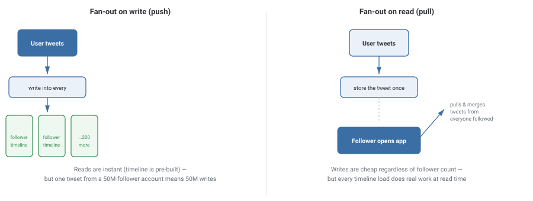

Design Twitter / X
Design a service where users post short text updates ("tweets"), follow other users, and see a chronological feed of tweets from everyone they follow. The functionality is simple; the hard problem is entirely about scale — specifically, how do you build millions of personalized feeds fast, when some accounts have hundreds of millions of followers?
Requirements
- Post a tweet (text, optionally media).
- Follow / unfollow other users.
- View a home timeline: tweets from everyone you follow, newest first.
- Timeline reads must be fast — this is the most-loaded endpoint in the whole system.
- Eventual consistency is acceptable — a tweet appearing a few seconds late is fine.
- Must handle wildly uneven follower counts (most users: hundreds; a few: tens of millions).
Capacity Estimation
| Assumption | Value |
|---|---|
| Daily active users | 150 million |
| Average followers per user | ~200 |
| Tweets posted per day | ~300 million |
| Write QPS (new tweets) | ~3,500 / sec |
| Timeline loads per day (5 per DAU) | ~750 million |
| Read QPS (timeline loads) | ~8,700 / sec |
| Naive fan-out writes/day (tweets × avg followers) | ~60 billion |
That last row is the whole problem in one number: pre-computing every follower's timeline on every tweet means 60 billion timeline-cache writes a day on average — and for one celebrity tweet alone, tens of millions of writes in seconds.
High-Level Design
The two candidate approaches for building a timeline, and the trade-off between them, are the entire crux of this problem:

Production systems use a hybrid: fan-out on write for the vast majority of users (whose follower counts are small enough that pre-computing their followers' timelines is cheap), and fan-out on read for celebrity/high-follower accounts (merging their tweets into a timeline at load time instead of pushing to millions of caches).
Deep Dive
The hybrid fan-out in detail
Each user is tagged as "regular" or "celebrity" past a follower-count threshold (e.g., 1 million). A regular user's tweet is pushed into every follower's precomputed timeline cache immediately — cheap, because follower counts are small. A celebrity's tweet is not pushed anywhere; instead, it's stored once, and every follower's timeline load separately checks "does anyone I follow who's a celebrity have new tweets?" and merges those in at read time.
Storing the timeline cache
Each user's precomputed timeline is a bounded list (say, the most recent 800 tweet IDs) stored in a fast key-value store (Redis), not a full copy of tweet content — just IDs, with the actual tweet text/media fetched from a separate tweet store in bulk when the timeline is rendered. This keeps the timeline cache small and cheap to update.
Why eventual consistency is the right call
If a tweet takes a few seconds to reach every follower's timeline, essentially nobody notices — feeds aren't a place where users expect millisecond-precision ordering across different people's screens. This is exactly the trade a CAP-theorem-style system should make: favor availability and low latency over strict, immediate consistency, because the cost of being briefly stale here is close to zero.
Trade-offs
- The account has a normal-sized follower count — the write cost stays small.
- Read latency matters more than write cost (true for almost everyone, almost all the time).
- An account has millions of followers — one post would mean millions of cache writes.
- This is exactly why a pure fan-out-on-write design is a known interview trap.
What interviewers are listening for: that you spot the celebrity problem yourself (rather than needing it pointed out), and that you can articulate the hybrid solution, not just describe "fan-out" as if it were one approach.
If you're a fresher: being able to explain fan-out-on-write vs. fan-out-on-read as a read-cost-vs-write-cost trade-off, with an example of each, is a strong answer.
If you're ~3 years in: you should be able to propose the hybrid threshold approach unprompted, and discuss how you'd pick the celebrity cutoff.
Interview Questions
Click a question to reveal the answer.
What breaks if you use pure fan-out-on-write for every account?
An account with tens of millions of followers would trigger tens of millions of cache writes for a single tweet, all at once — a massive, unpredictable write spike that can overwhelm the timeline cache tier and delay delivery to everyone, not just that account's followers.
How does the hybrid approach decide who gets fan-out-on-write vs. fan-out-on-read?
A follower-count threshold (e.g., 1 million) tags accounts as "celebrity." Regular accounts' tweets are pushed into followers' precomputed timelines immediately. Celebrity accounts' tweets are stored once and merged into each follower's timeline at load time, avoiding a massive write fan-out for the accounts that would otherwise trigger it.
Why store tweet IDs in the timeline cache instead of full tweet content?
Storing only IDs keeps each timeline cache entry small (a list of IDs vs. a list of full tweet objects with text and media references), which reduces memory pressure on the cache tier and avoids duplicating the same tweet's content across every follower's cache. Full content is fetched in bulk from a separate tweet store only when a timeline is actually rendered.
Why is eventual consistency acceptable here, when it wouldn't be for, say, a bank balance?
A social feed has no correctness requirement that depends on perfect real-time ordering across users — a tweet appearing a few seconds late causes no real harm and is barely noticeable. A bank balance, by contrast, has a real consequence (overdrawing an account) if a stale read is acted on. The acceptable cost of staleness is what should drive the consistency choice, not a blanket rule.